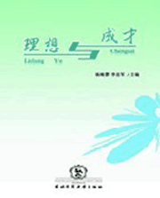

感悟“理想与成才”

每当坐在台下听“理想与成才报告团”的报告时，看着他们那一张张青春洋溢的脸，我想知道，飞扬的理想将把这些年轻人引领向何方？
捧着厚厚的书稿，我仿佛再次看见他们拼搏的身影，仿佛再次听见他们坚定的声音。我不禁为之感动，一种难以抑制的情感在我心中升腾，降落，不断回荡，是欣慰，更是骄傲。
一颗颗质朴赤热的心灵，一个个震撼人心的故事，完整地呈现在我的眼前，多好的青年，多好的学生啊！逆境中奋发向上，自强不息；顺境里自觉自为，敢为人先；诱惑面前，不为所动，苦心钻研……这不正是每个教育者的希望和寄托吗？这不正是东北师范大学培养的学生所应具有的可贵品质吗？
捧着厚厚的书稿，我仿佛再次看见他们拼搏的身影，仿佛再次听见他们坚定的声音。我不禁为之感动，一种难以抑制的情感在我心中升腾，降落，不断回荡，是欣慰，更是骄傲。
一颗颗质朴赤热的心灵，一个个震撼人心的故事，完整地呈现在我的眼前，多好的青年，多好的学生啊！逆境中奋发向上，自强不息；顺境里自觉自为，敢为人先；诱惑面前，不为所动，苦心钻研……这不正是每个教育者的希望和寄托吗？这不正是东北师范大学培养的学生所应具有的可贵品质吗？
东北师范大学建校60多年来，向社会输送了大量人才。为了展示我校优秀学子的风采，也为了激励在校学生奋发向上，1996年东北师范大学组建了第一届“理想与成才”报告团。10年来，报告团的51名成员从这里出发，带着母校给予的披荆斩棘的勇气，带着经历风雨练就的自信，去寻找梦想中的佳境，人生中的彩虹。
如今，他们有的已经小有成就，未来的发展是一片海阔天空；有的则刚刚步入职场，初露锋芒；有的还在校园里读书深造，正蓄势待发……美好的前程在不远处守候，看着他们的今天，去回望他们的大学时代，那些曾经坚定的脚步更显得有力，那些曾绽放在风雨中的笑脸更扣人心扉。
“身边人讲述身边事，身边事影响身边人”，即使他们已经飞向广阔的天空，我仍然满怀欣慰。我们已经完整地记录了他们的事迹，希望同学们以这些报告团成员为榜样，从他们的事迹中得到激励和启发，在追求理想的过程中，不怕困难，珍惜时间，刻苦学习，不断进步。这也是我们编辑此书的宗旨所在。
最后，愿东北师范大学所有志存高远的学子，都能在母校殷切的目光中，向着心中的梦想，飞得更高，更远……
如今，他们有的已经小有成就，未来的发展是一片海阔天空；有的则刚刚步入职场，初露锋芒；有的还在校园里读书深造，正蓄势待发……美好的前程在不远处守候，看着他们的今天，去回望他们的大学时代，那些曾经坚定的脚步更显得有力，那些曾绽放在风雨中的笑脸更扣人心扉。
“身边人讲述身边事，身边事影响身边人”，即使他们已经飞向广阔的天空，我仍然满怀欣慰。我们已经完整地记录了他们的事迹，希望同学们以这些报告团成员为榜样，从他们的事迹中得到激励和启发，在追求理想的过程中，不怕困难，珍惜时间，刻苦学习，不断进步。这也是我们编辑此书的宗旨所在。
最后，愿东北师范大学所有志存高远的学子，都能在母校殷切的目光中，向着心中的梦想，飞得更高，更远……